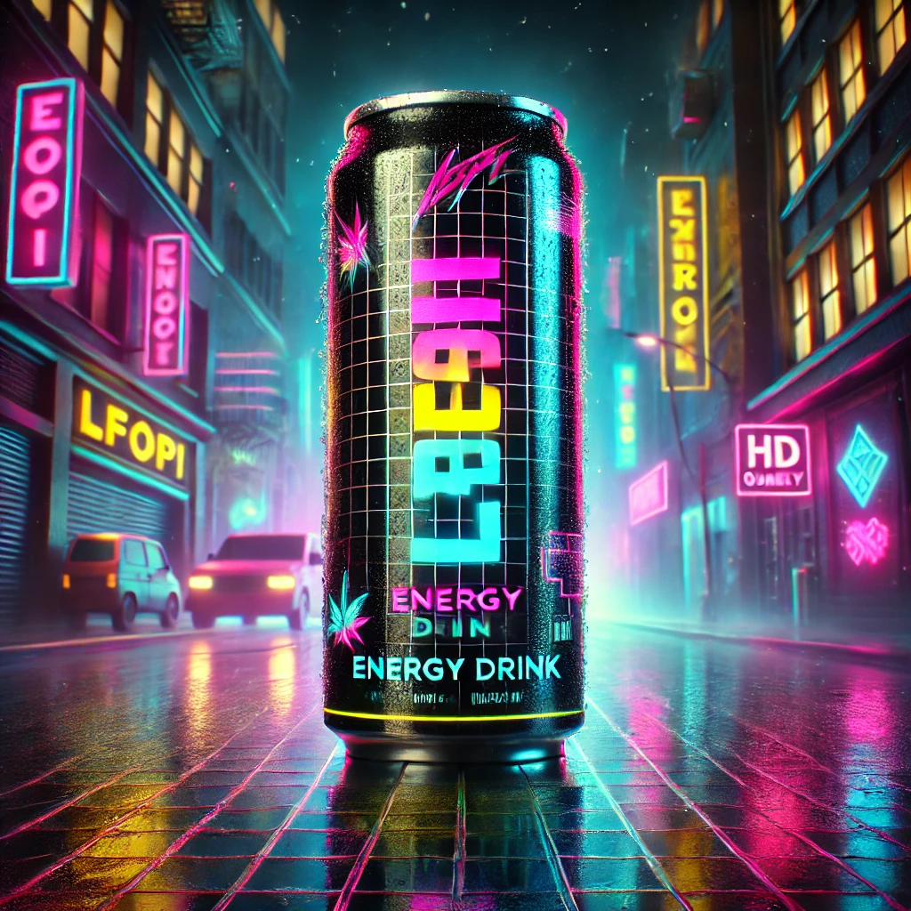
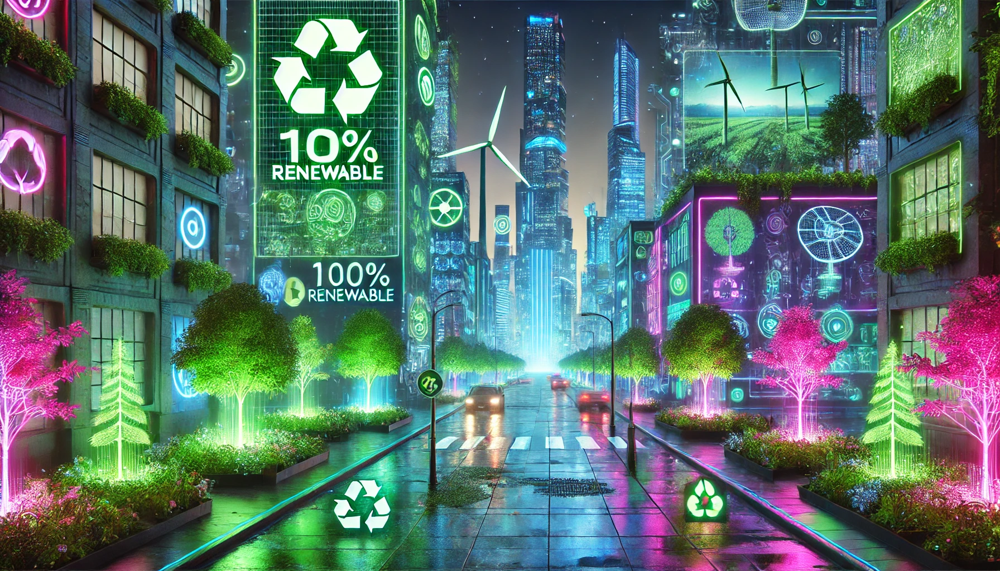

LFoPI is a bold and vibrant soda that takes your taste buds on an exotic adventure. Bursting with tropical flavors, it combines the tangy zing of passion fruit and pineapple with a refreshing hint of lime, all balanced by a subtle sweetness that lingers just long enough to make you crave the next sip.
Serving Size: 12 fl oz (355 mL)
Calories: 140
Total Fat: 0g
Saturated Fat: 0g
Trans Fat: 0g
Cholesterol: 0mg
Sodium: 30mg
Total Carbohydrates: 36g
Dietary Fiber: 0g
Total Sugars: 35g
Includes 35g Added Sugars (70% DV)
Protein: 0g
LFoPI is more than a soda—it’s a commitment to sustainability. Packaged in 100% recyclable materials and made with ethically sourced tropical ingredients, it supports small farmers while minimizing its carbon footprint. Powered by renewable energy and using water-efficient production, LFoPI achieves carbon neutrality and protects freshwater ecosystems. The brand also invests in reforestation projects and empowers indigenous communities.
